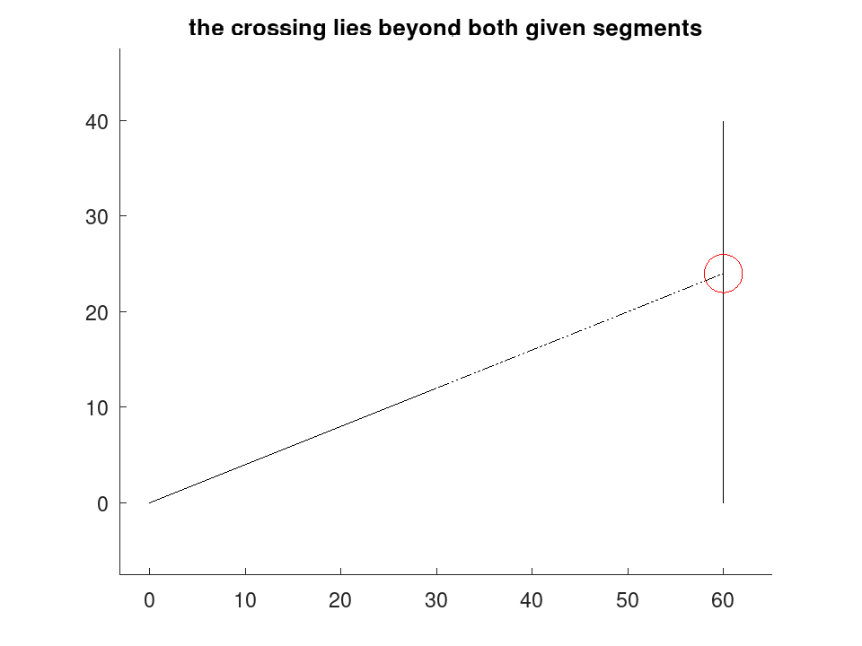

geom.intersectlines
drafting: P = geom.intersectlines (A, B)
drafting: [P, TA, TB] = geom.intersectlines (A, B)
Where two lines cross.
P = geom.intersectlines (A, B) returns the point at
which the lines through A and B meet. Each line is given as a
2-by-2 matrix holding two points on it, one per row. P is empty when
the lines are parallel.
[P, TA, TB] = geom.intersectlines (…) also
returns where the crossing falls along each line, as a fraction of the
distance from its first point to its second. TA = 0 is
A(1,:) and TA = 1 is A(2,:).
The lines are treated as infinite, which is what construction geometry wants: a corner is filleted, a centre line extended, a bisector dropped, all from lines whose given points rarely reach the crossing.
A caller wanting segments tests the parameters: the segments cross when both TA and TB lie between 0 and 1. Returning them costs nothing and lets one function serve both questions, rather than having two that differ in a detail easily forgotten.
Two collinear lines meet everywhere, not somewhere, so P is empty for them as it is for parallel ones. A caller who must tell the two apart can test whether a point of one lies on the other.
See also: geom.intersectcircle, geom.intersectcircles, geom.fillet
Source Code: geom.intersectlines
The lines are infinite, which is what construction geometry wants: the crossing is usually nowhere near the points that define the lines.
A = [0, 0; 30, 12]; B = [60, 0; 60, 40]; [P, TA, TB] = geom.intersectlines (A, B)
P = 60 24 TA = 2 TB = 0.6000
D = draw.Drawing ();
D.Linetype = 'PHANTOM';
D = D.line (A(1,:), P).line (B(1,:), P);
D.Linetype = 'CONTINUOUS';
D = D.line (A(1,:), A(2,:)).line (B(1,:), B(2,:));
D.Colour = 'red';
D = D.circle (P, 2);
plot (D);
title ('the crossing lies beyond both given segments');

The parameters say where along each line the crossing falls, so one function answers both the line question and the segment question: the segments cross when both lie between 0 and 1.
[P, TA, TB] = geom.intersectlines ([0, 0; 20, 0], [10, -5; 10, 5]); crossed = TA >= 0 && TA <= 1 && TB >= 0 && TB <= 1
crossed = 1
[P, TA, TB] = geom.intersectlines ([0, 0; 5, 0], [10, -5; 10, 5]); crossed = TA >= 0 && TA <= 1 && TB >= 0 && TB <= 1
crossed = 0